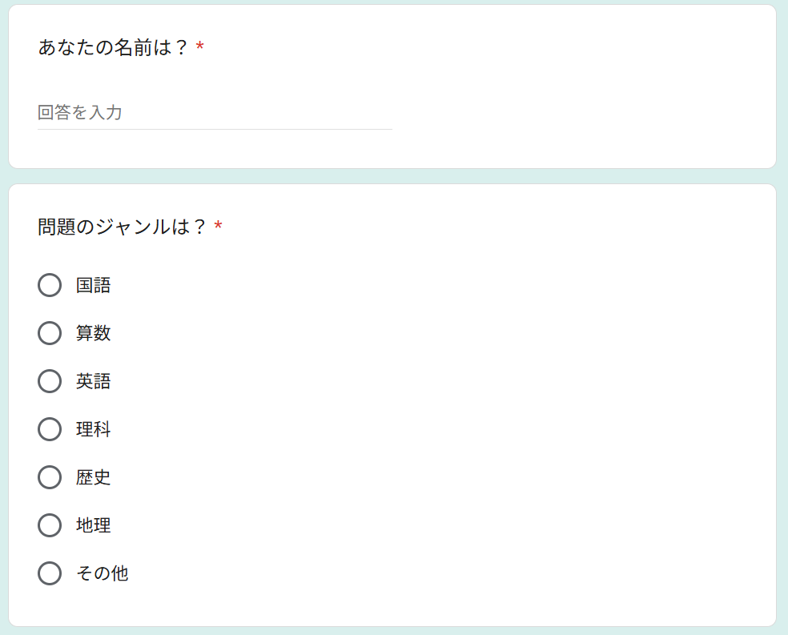
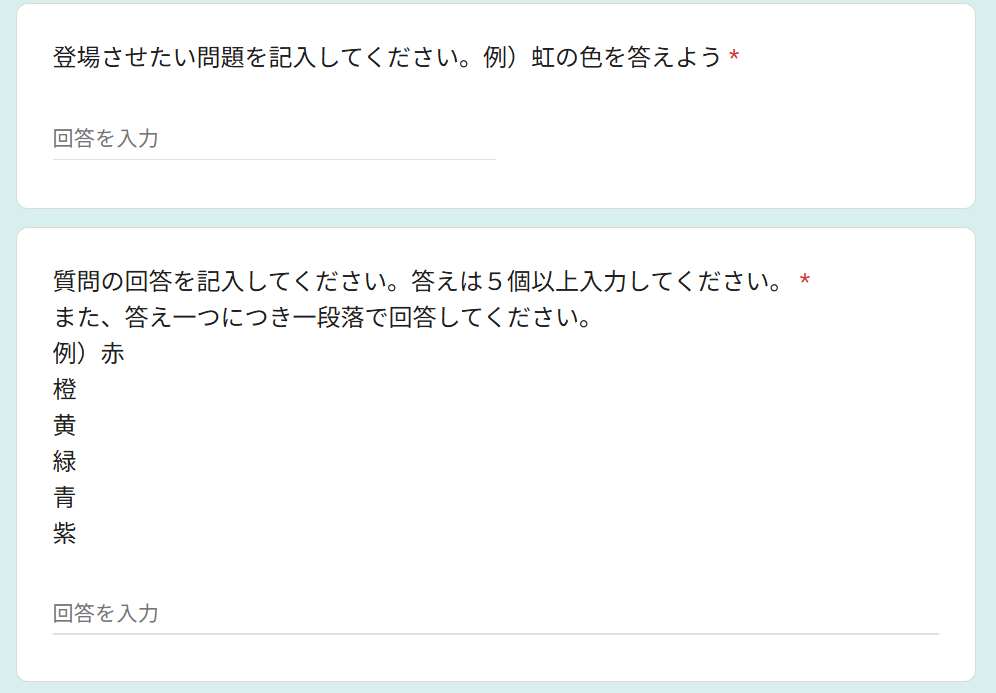
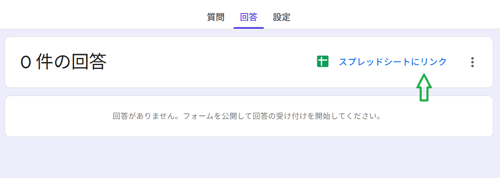
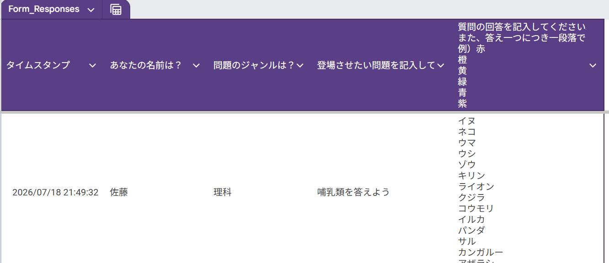
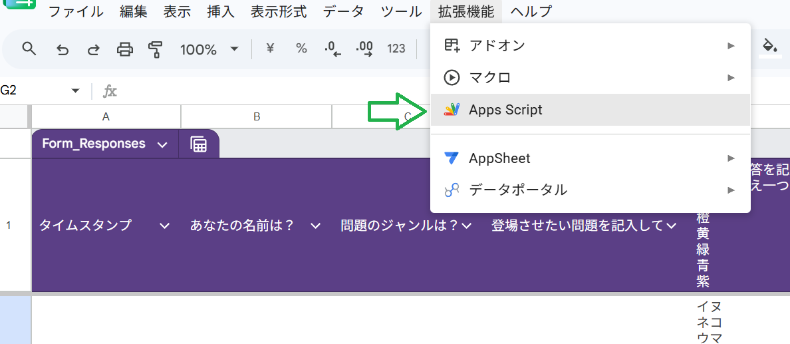
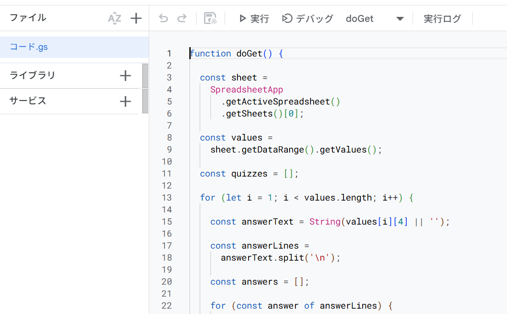
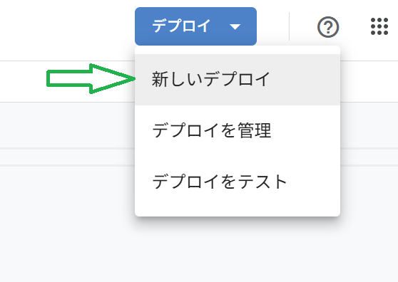
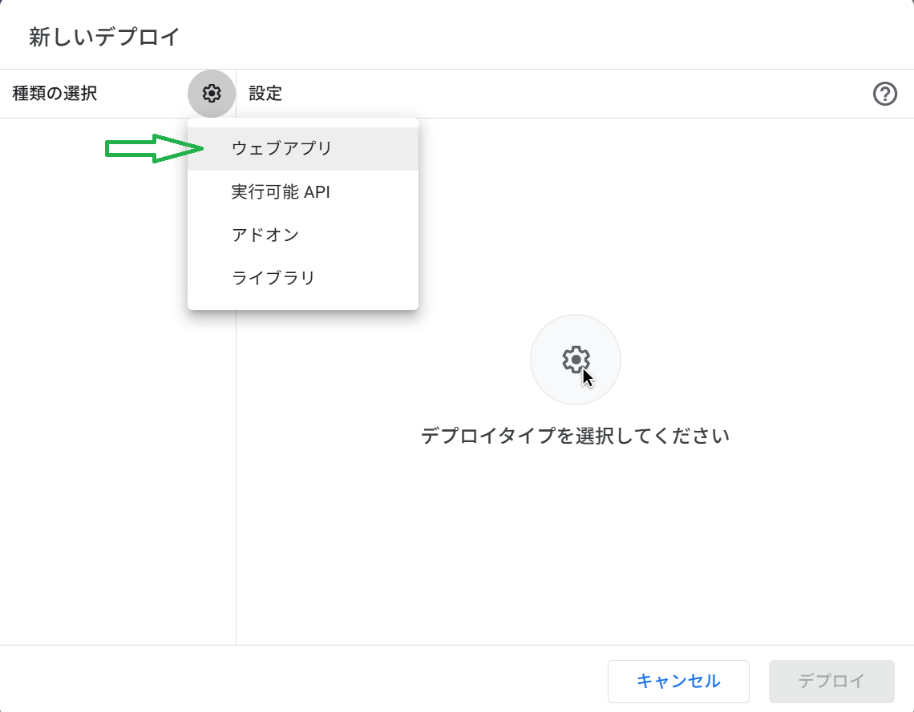
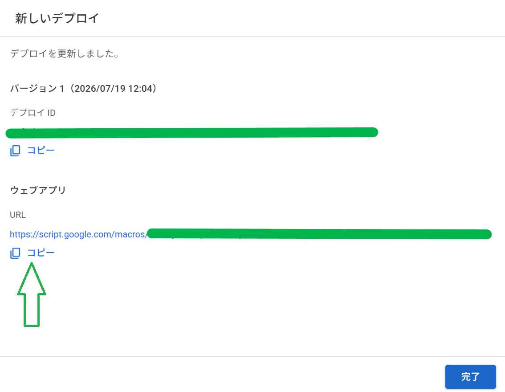
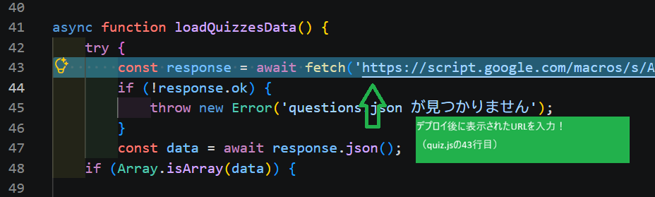

本ページでは、「作問の森」を他校や別環境で運用するための導入手順を説明します。 本システムはGoogleフォーム、GoogleスプレッドシートおよびGoogle Apps Scriptを利用して 問題データを管理しています。
システムの導入にはGoogleフォームやGoogle Apps Scriptの設定が必要となるため、 一般の利用者ではなく、開発者やICT担当教員、またはITに関する知識を持つ方による設定を想定しています。
Googleフォームで以下の項目を作成してください。
「質問の回答を記入してください。」は 段落形式にしてください。
入力例：
イヌ
ネコ
ウマ
ウシ
ゾウ


Googleフォームの「回答」タブを開き、 「スプレッドシートにリンク」を選択してください。
フォームに入力された問題は自動的に Googleスプレッドシートへ保存されます。


スプレッドシートの 「拡張機能 → Apps Script」 を開いてください。
作成されたプロジェクトに以下のコードを貼り付けます。
function doGet() {
const sheet =
SpreadsheetApp
.getActiveSpreadsheet()
.getSheets()[0];
const values =
sheet.getDataRange().getValues();
const quizzes = [];
for (let i = 1; i < values.length; i++) {
const answerText = String(values[i][4] || '');
const answerLines =
answerText.split('\n');
const answers = [];
for (const answer of answerLines) {
const trimmed = answer.trim();
if (trimmed !== '') {
answers.push(trimmed);
}
}
quizzes.push({
id: i,
author: values[i][1],
genre: values[i][2],
question: values[i][3],
answers: answers
});
}
return ContentService
.createTextOutput(
JSON.stringify(quizzes)
)
.setMimeType(
ContentService.MimeType.JSON
);
}


デプロイ後に表示されるURLを控えてください。



公開されたApps ScriptのURLを 「quiz.js」の取得先URLとして設定することで、 Googleフォームで集めた問題をクイズに反映できます。

以上で設定は終わりです。
本卒業研究版では、GoogleフォームおよびApps Scriptの設定は あらかじめ完了しています。通常の利用者が設定作業を行う必要はありません。
このガイドは、将来的に他校で利用する際の参考資料として 作成しています。